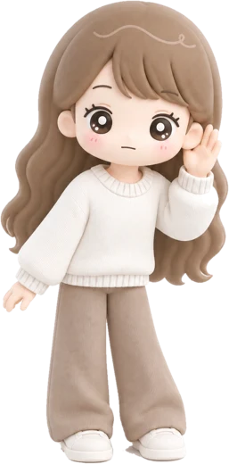
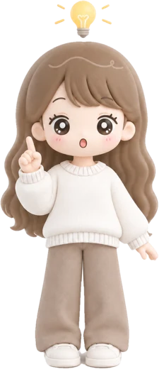
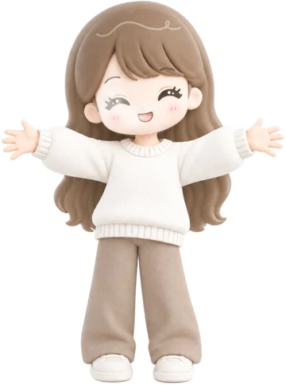
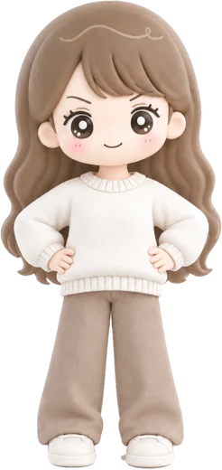
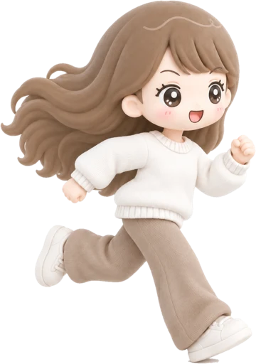
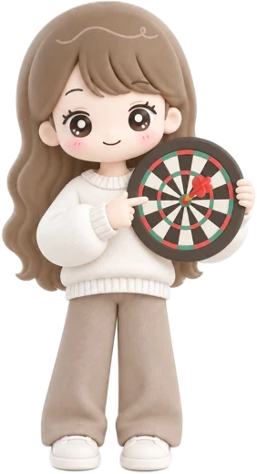
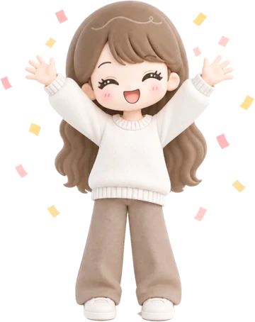
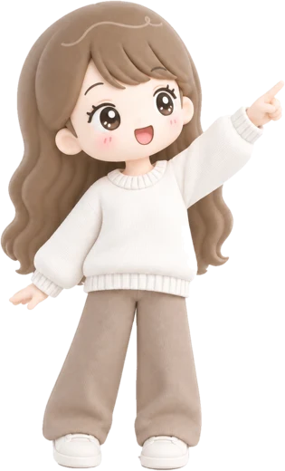

見る目 その1
言葉の奥を見る
「海が見える会場がいい」という新婦さん。条件だけなら、海の見える会場を並べれば終わりです。ますまるさんは理由を聞き、その奥に亡くなったおばあさまへの想いがあることにたどり着きました。
条件より先に背景を聞く。相手の言葉を、すぐ結論にしない。
ますまるさん営業の相談相手・伴走パートナー
営業から自分らしいギフトを見つける ／ 展開編
ストレングスファインダーの資質は、言葉だけだとピンときにくいもの。そこで、営業歴15年のますまるさんの上位資質が、営業のどの場面でどう働いていそうかを、資質の組み合わせと、ご本人が公開している言葉から見立ててみました。答え合わせは、ぜひご本人と。
まず、ひと目で
エンジンは「目の前の、この人」。
実行力の資質は上位にないのに、担当エリアは全国1位。この資質の並びから見立てると、ますまるさんの行動力は、自分のためのチェックリストからではなく、「良くなってほしい誰か」がいる時に出てくるタイプだと考えられます。
手の届く範囲にいる人をみんな幸せにしたい、と本気で思ってます
ムービーでも
個別化の高い人は、一人ひとりの違いに自然と目が向きます。「お客さま」というひとまとめで見るのではなく、目の前のその人だけの事情や願いを見ています。ますまるさんの言葉を読むと、それが3つの場面に出ていそうです。


「海が見える会場がいい」という新婦さん。条件だけなら、海の見える会場を並べれば終わりです。ますまるさんは理由を聞き、その奥に亡くなったおばあさまへの想いがあることにたどり着きました。
条件より先に背景を聞く。相手の言葉を、すぐ結論にしない。
数を沢山打つ営業は、私の役目ではないと思っています。ますまるさんのプロフィールの一文です。相手ごとに「誰に届けるか」「どう伝えるか」を変える。それは、一人ひとりの違いを見る個別化の発想そのものです。
「誰に届けたら、いちばん喜んでもらえるか」を一緒に決めてから動く。
今日の話から。お客さまが決めきれない時、ますまるさんは最後まで味方でいることを選びます。そのうえで「この人は何に引っかかっているのか」を見ます。値段なのか、家族なのか、タイミングなのか。
相手が言い出しにくい不安は、こちらから先に言葉にしてあげる。
ちなみに34位は「公平性」。公平性は「みんなに同じルールで」を大事にする資質で、個別化とちょうど反対側にあります。ますまるさんにとっては「一人ずつ違って当たり前」が、とても自然な見方だということです。
営業の流れで見ると
一つの資質だけで営業しているわけではありません。場面ごとに、前に出る資質が入れ替わっています。
笑顔はブライダルの世界で身についた特技。最初の数分で「話しやすい人だな」と思ってもらえます。
深く向き合いたいから、同時に受けるのは数社まで。
商品の説明より先に、安心して本音を話せる関係をつくる。相手の気持ちを、相手の温度のまま受け取ります。
「ちゃんと理解しようとしてくれている」と感じてもらうのがゴール。

商品は目的ではなく、相手が叶えたい未来のための手段。その未来を、相手と同じ温度でイメージする。
「当たる中身」をつくってから打つ。

要らない物には「必要ないですよね」と正直に言う。自分の判断を信じられる人だから、売り込まずに背中を押せます。
大きな決断の場で「あなたにお願いしたい」と選ばれてきた理由。

代わりに売るのではなく、相手に合う「営業の型」を一緒につくる。相手が自分で回せるようになるまで伴走します。
お引き受けした方には、本気で伴走。
10の資質を、1枚ずつ

良いものを、さらに最高のものへ磨きたい
限られた人と、深く信頼しあう関係を育てる
場を明るくし、前を向くエネルギーを伝える
学ぶこと、上達していく過程そのものが好き

今この瞬間の変化に、柔軟に乗っていける
人も出来事も、どこかでつながっていると感じる
一人ひとりの違いに気づき、その人に合わせる
人の小さな成長に気づき、伸ばしたくなる
相手の気持ちを、自分のことのように感じとる
自分の判断を信じて、進む道を自分で決める
強みの、裏側も
ここは資質の組み合わせから見た、一般的な傾向です。当てはまるかどうかは、ご本人に聞いてみてください。
共感性と親密性が高い人は、相手の気持ちを受け取りすぎて、あとで一気に疲れが出ることがあります。
人と会う予定のあとに、休む時間を先に入れておく。
最上志向と個別化がそろうと、相手の伸びしろが見えすぎて、つい言いたくなることも。タイミングしだいで、相手には重く届きます。
「これが求められている」と分かってから出す。
実行力の資質が上位にない人は、相手がいない作業や自分の事務が後回しになりやすい傾向があります。
「誰かと一緒に」「リマインドが来る仕組み」に乗せる。
ここから、あなたの番
